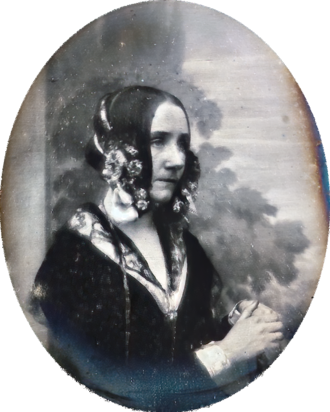

Image by Cool Text: Free Logos and Buttons - Create An Image Just Like This
Em 10 de Dezembro de 1980 foi-se criada ADA, uma linguagem de programação de alto nível, que ainda perdura em muitos sistemas-legado até os dias de hoje. Apesar de ter tido uma vida curta, falecendo aos 36 anos de idade, as contribuições de Ada para a tecnologia perduram, e ela ainda vive nos dias de hoje, em que os avanços tecnológicos certamente não seriam como são se não fosse por Lovelace, que tinha não só o pensamento matemático, como também a paixão e curiosidade para enxergar além do que era possível para a época.
